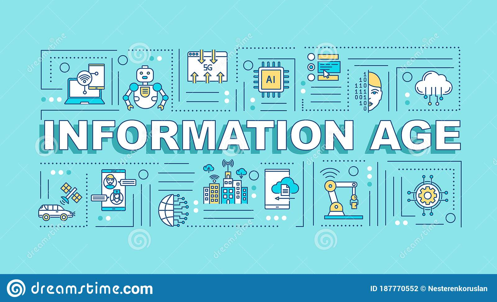

The Information Age is the successor of the Post-Industrial Society.
Coined by many as a Technocracy, Neo-Fuedal Society, Digital Age etc. We use Alan Tofflers definition for our understanding of the Post-Industrial Society. The Information Age comes after the radical changes that the Agrarian Society and Industrial Society brought. The radical change in which the Information Age brings is the application of technology that resides on the internet, these applications include solving poverty, hunger, crime, as well as impacting healthcare, finance, agriculture, transportation etc.
The Information Age brings a variety of different ideas, from ideas like the neuralink and its association to transhumanism, to the Internet of Everything being apart of your daily life, to the centralization of identification information to now the centralization of currency.
Sources: